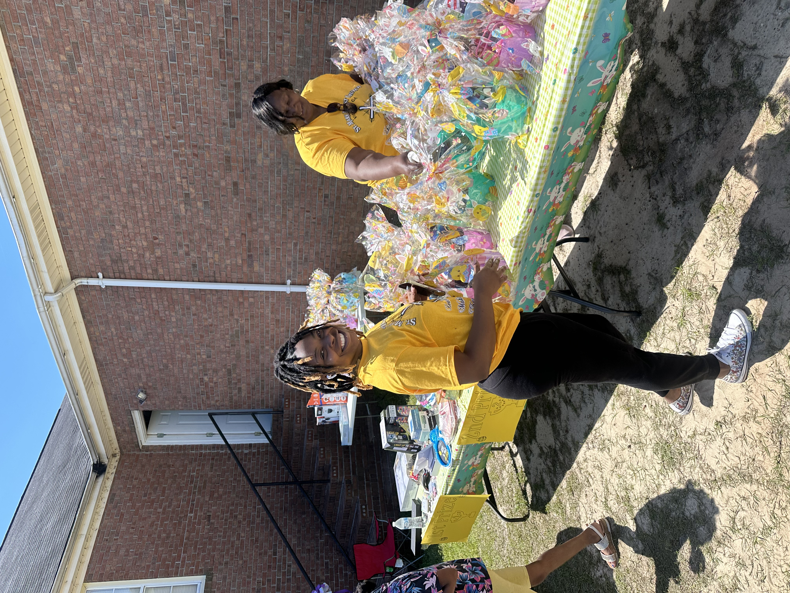
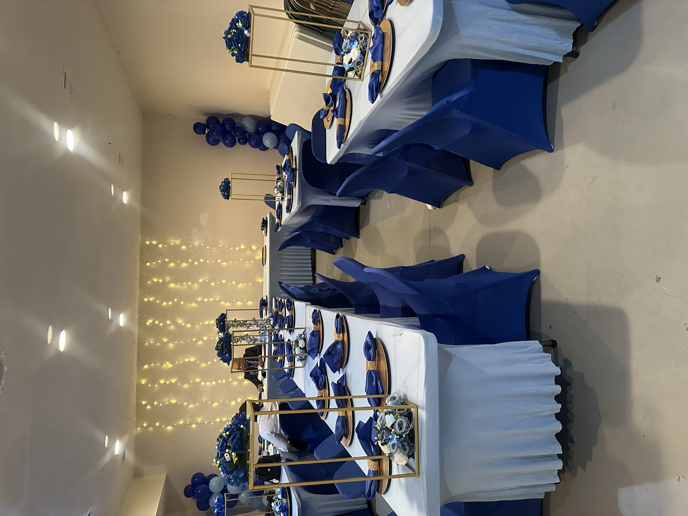

+
Saint Mark Missionary Baptist Church
Looking Back to Move Forward — reaching the lost, making disciples, and transforming lives through faith, worship, and community.
Learn MoreLooking Back to Move Forward — reaching the lost, making disciples, and transforming lives through faith, worship, and community.
Learn More



We meet on the 1st and 3rd Sundays.
Sunday School - 10:00 AM
Worship Service - 11:00 AM
3rd Friday Bible Study - 6:00 PM
August - Fall Revival
September - Tailgating for Jesus Fall Festival
November - Breakfast of Champions
December - Angel Tree for Community Children
There is room in this story for your contribution. Join us as we serve, grow, worship, and build together.
Support the mission and ministry of Saint Mark Missionary Baptist Church through your generosity and sacrifice.
Give Now
Welcome to Saint Mark Missionary Baptist Church. We greet you with joy, love, and gratitude in the name of our Lord and Savior Jesus Christ.
Whether you are visiting for the first time or searching for a church home, we invite you to worship with us and become part of the Saint Mark family.
About Our ChurchRevivalist: Rev. Willie Green
Forest Chapel Baptist Church
Tailgating for Jesus
Fall Festival
Breakfast of Champions
A Community Outreach Initiative
Angel Tree for
Community Children
“This is the day that the Lord has made; we will rejoice and be glad in it.”
— Psalm 118:24